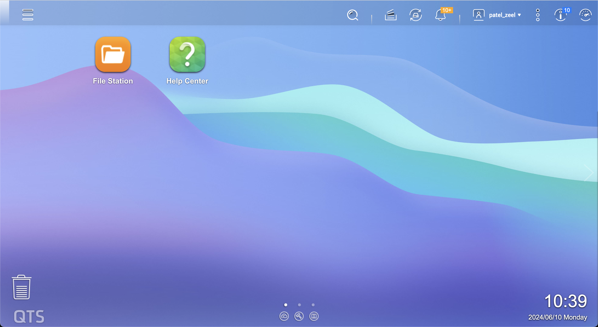
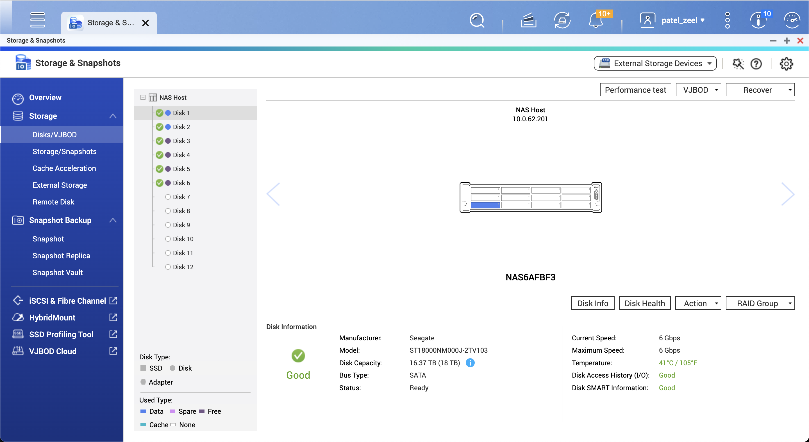
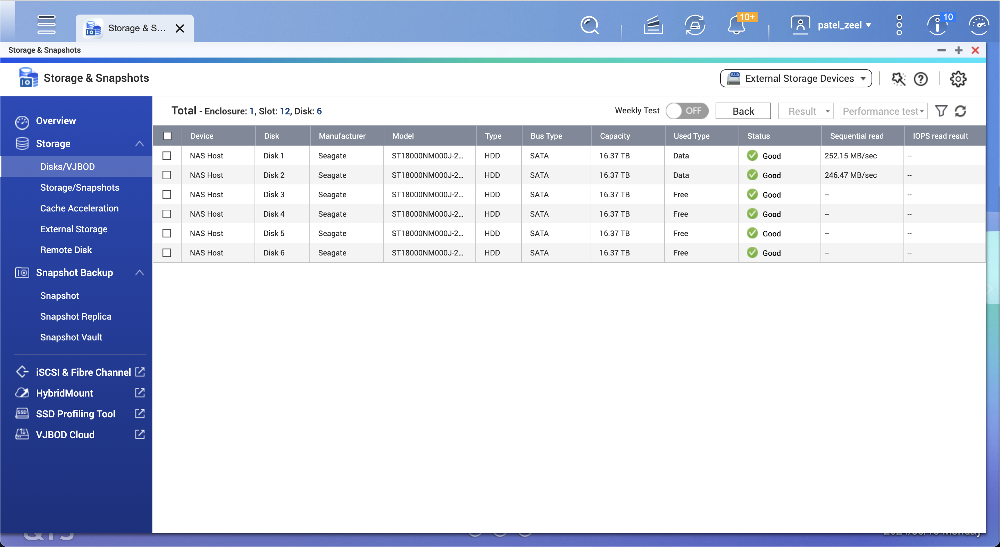
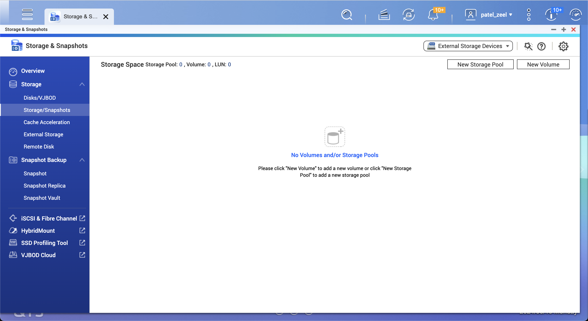
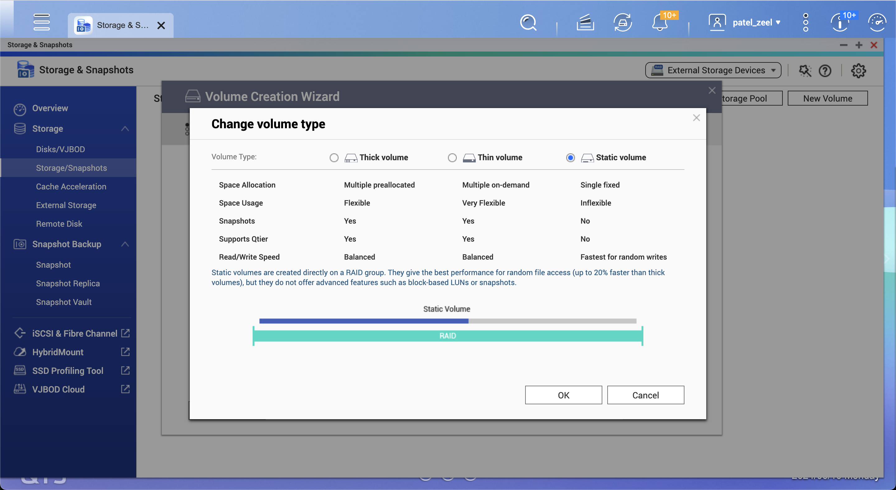
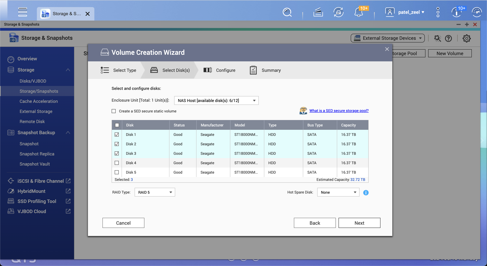
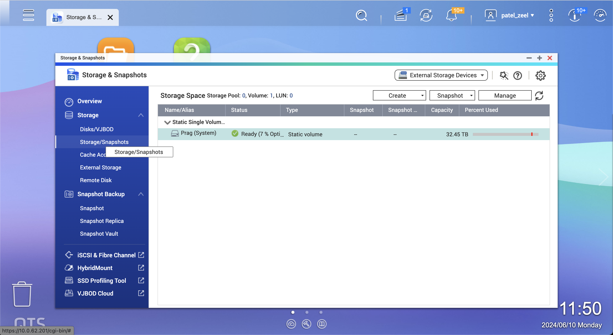
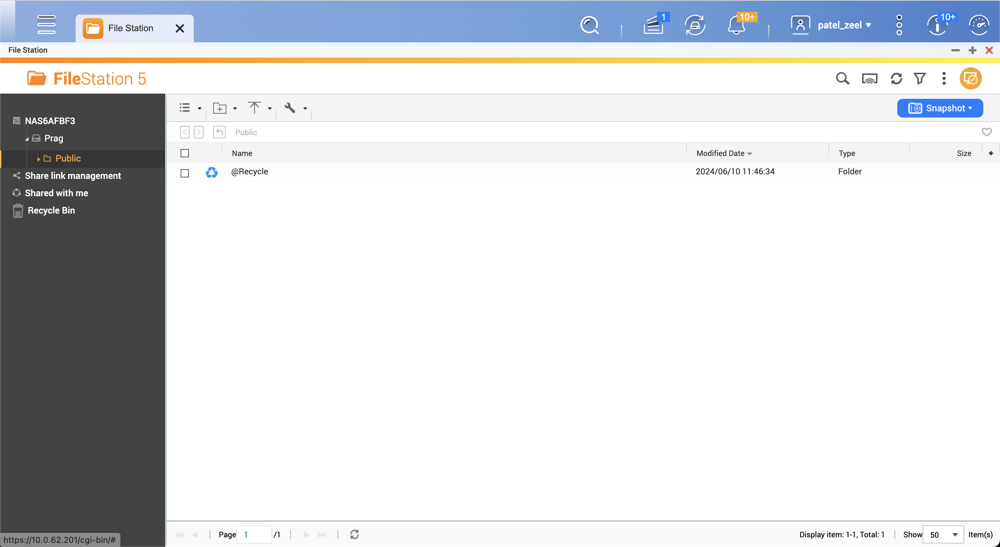
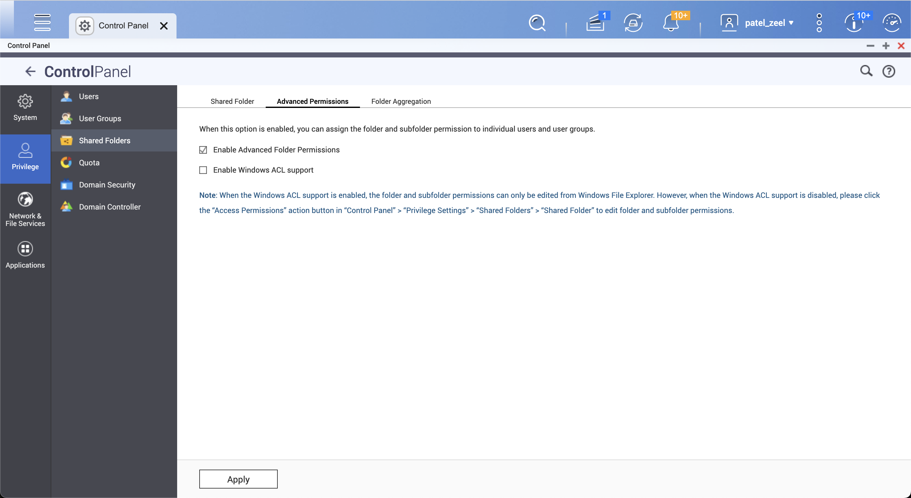

- Source: QNAP NAS Setup
Terminology
NAS: Network Attached Storage DeviceHOST: The server where the NAS volume is mounted
Create the Volume
Open NAS web interface in a browser by IP address (currently,
10.0.62.201) and login with an admin access account.Homepage may look like this: 
Checking the storage space and number of HDDs installed. It shows total 12 slots and 6 slots filled with HDDs. 
After clicking
Performance test, it shows the following panel. After running tests on a few HDDs, it seems that the read speed is approx 250 MBPs. We need to create a volume to store data. 
Choosing
Static Volumeto get maximum read/write speed. Using 3 HDDs for now in RAID 5 mode (saves against 1 HDD failure and provides N/2 storage space). 
After submitting the request, wait for a few minutes and you’ll have your NAS volume ready to use. 
By default,
Publicfolder is created in the volume. 
Set permissions from the NAS web interface
- Enable Advanced Folder Permissions 
Mount on the host server
- Mounting with NFS mode is not safe and thus it is disabled as of now. So, we will mount the NAS volume using CIFS.
sudo mount -t cifs //10.0.62.201/foldername directory_path_in_server -o username=username,password=password,uid=uid,gid=gid,file_mode=file_mode,dir_mode=dir_modeMeanings of the arguments:
| Argument | Meaning |
|---|---|
| username | Username of the NAS account |
| password | Password of the NAS account |
| uid | User ID on HOST (can be viewed by id command) |
| gid | Group ID on HOST (can be viewed by id command) |
| file_mode | File permissions |
| dir_mode | Directory permissions |
Case 1: Mounting a dataset directory for everyone
- Create
datasetshared folder in the NAS volume. - Create a dataset directory in the host server.
sudo mkdir /mnt/dataset- Mount the dataset directory in the host server.
sudo mount -t cifs //10.0.62.201/dataset /mnt/dataset -o username=username,password=passwordWe explicitely chose to not specify uid,gid,file_mode,dir_mode so that only root can write inside /mnt/dataset in the host server. However, everyone can read from it. So, even the sudo users can not mistakenly delete the data unless they use sudo command or login as root. Default file_mode is 0644 (read/write for owner, read for group and others) and default dir_mode is 0755 (read/write/execute for owner, read/execute for group and others).
Case 2: Mounting a personal directory for a specific user
- Create
personalshared folder in the NAS volume. - Create a personal directory in the host server.
sudo mkdir /mnt/personal- Get the uid and gid of the user.
id username- Mount the personal directory in the host server.
sudo mount -t cifs //10.0.62.201/dataset /mnt/dataset -o username=username,password=password,uid=uid,gid=gid,file_mode=0600,dir_mode=0700file_mode=0600 and dir_mode=0700 ensures that only the user can read/write inside /mnt/personal in the host server. No one else can read/write inside it.